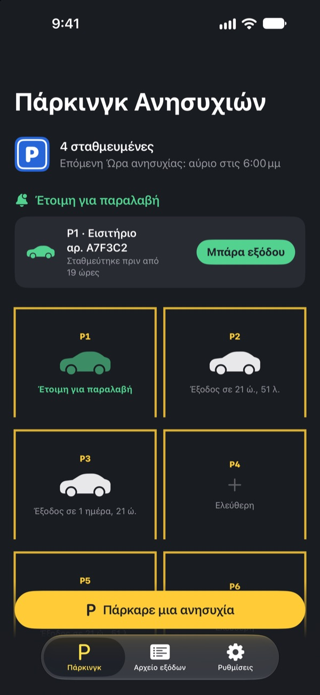
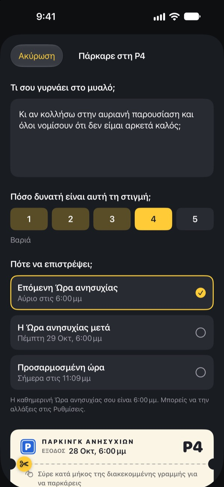
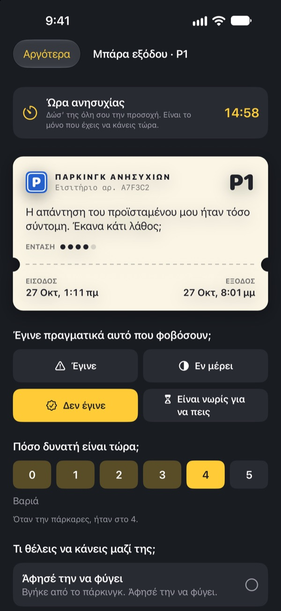
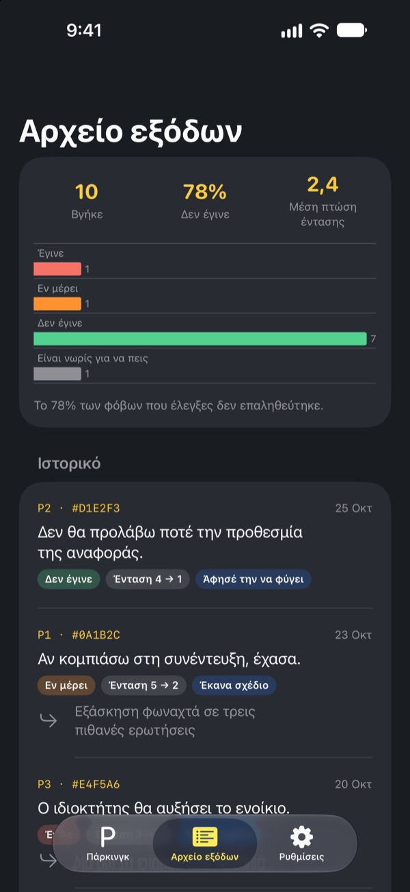

Πάρκαρε την ανησυχία.
Πάρ’ την αργότερα.
Γράψε ό,τι στριφογυρίζει στο μυαλό σου πριν κοιμηθείς και άφησέ το σε ένα εισιτήριο στάθμευσης. Θα σου το επιστρέψουμε στην Ώρα ανησυχίας. Μέχρι τότε, δεν χρειάζεται να το κουβαλάς.
Όλες οι λειτουργίες είναι δωρεάν. Χωρίς διαφημίσεις, χωρίς λογαριασμό.

Πάρκαρε μια ανησυχία
Κράτα το παράδειγμα ή γράψε ό,τι σε απασχολεί τώρα. Μόλις παρκαριστεί θολώνει, και στην Ώρα ανησυχίας τη βγάζεις ξανά.
Κλείνεις το φως και το μυαλό ανάβει;
Μόλις ακουμπήσεις στο μαξιλάρι, ξεκινάει: κάτι που είπες σήμερα, η αυριανή σύσκεψη, το μήνυμα που ακόμα δεν απαντήθηκε. Όσο πιο πολύ προσπαθείς να μην το σκέφτεσαι, τόσο πιο δυνατά ακούγεται. Το Πάρκινγκ Ανησυχιών δεν σου ζητά να διώξεις την ανησυχία. Τη γράφεις, της δίνεις μια θέση και κρατάς χρόνο για να ασχοληθείς μαζί της.
Γραμμένη, βγαίνει από το μυαλό
Γράψ’ την ακριβώς όπως ακούγεται στο μυαλό σου και δείξε πόσο δυνατή είναι τώρα, από το 1 ως το 5. Κόψε το εισιτήριο και η ανησυχία μένει στο πάρκινγκ, θολή.
Αν ξαναμπεί στο μυαλό σου, πες της: έχεις ήδη θέση. Θα έρθει η ώρα σου, αλλά όχι τώρα.

15 λεπτά στην Ώρα ανησυχίας
Κάθε μέρα στην Ώρα ανησυχίας έρχεται μια υπενθύμιση. Στη μπάρα εξόδου διαβάζεις ξανά την ανησυχία, ελέγχεις αν όντως συνέβη και πόσο δυνατή είναι τώρα.
Μετά την αφήνεις να φύγει, την κάνεις ένα μικρό επόμενο βήμα ή την παρκάρεις ως την επόμενη Ώρα ανησυχίας.

Δες πόσο συχνά βγήκαν αληθινές
Όσο περισσότερες ανησυχίες βγαίνουν, τόσο πιο καθαρά δείχνει το αρχείο εξόδων πόσες συνέβησαν στ’ αλήθεια και πόσο έπεσε η έντασή τους.
Η ανησυχία συνήθως φαντάζεται το μέλλον χειρότερο απ’ ό,τι βγαίνει. Όσο περισσότερα καταγράφεις, τόσο λιγότερο πιστεύεις την επόμενη.

Ξεκινάς σε τρία βήματα
- 1
Διάλεξε την Ώρα ανησυχίας σου
Την πρώτη φορά που την ανοίγεις, διαλέγεις πότε θα ασχολείσαι με τις ανησυχίες σου κάθε μέρα. Αλλάζει αργότερα από τις Ρυθμίσεις.
- 2
Πάρκαρε μια πραγματική ανησυχία
Πάρκαρε αμέσως κάτι που σε βαραίνει και πρόσεξε πώς αλλάζει η ένταση πριν και μετά.
- 3
Επίτρεψε τις υπενθυμίσεις παραλαβής
Στην Ώρα ανησυχίας έρχεται υπενθύμιση μόνο με τον αριθμό της θέσης.
Γιατί λειτουργεί
- Ανησύχησε μόνο σε σταθερή ώρα
- Όσοι μετέφεραν τις ανησυχίες τους σε ένα σύντομο καθημερινό διάστημα ανησυχούσαν λιγότερο και ανέφεραν λιγότερο άγχος και προβλήματα ύπνου. (Borkovec κ.ά., 1983· McGowan & Behar, 2013)
- Γράψε για να αφήσεις
- Ένα συγκεκριμένο σχέδιο εμπόδιζε τις εκκρεμότητες να μπαίνουν στις σκέψεις, και πέντε λεπτά γραψίματος πριν τον ύπνο βοήθησαν τους ανθρώπους να κοιμηθούν πιο γρήγορα. (Masicampo & Baumeister, 2011· Scullin κ.ά., 2018)
- Έλεγξε τι συνέβη στ’ αλήθεια
- Όταν άνθρωποι με χρόνια ανησυχία κατέγραψαν τις ανησυχίες τους, το 91% δεν βγήκε αληθινό. (LaFreniere & Newman, 2020)
Το Πάρκινγκ Ανησυχιών βασίζεται στην αναβολή της ανησυχίας, μια τεχνική της γνωσιακής συμπεριφορικής θεραπείας (ΓΣΘ) που μελετάται εδώ και δεκαετίες.
Όλα είναι δωρεάν
Δωρεάν
- Απεριόριστες θέσεις στάθμευσης
- Καθημερινές υπενθυμίσεις στην Ώρα ανησυχίας και δική σου ώρα εξόδου
- Μπάρα εξόδου και αρχείο εξόδων
- Στατιστικά εξόδων: πόσες συνέβησαν και πόσο έπεσε η ένταση
Φιλοδώρημα, αν θέλεις
- Αν σε βοηθάει, μπορείς να αφήσεις ένα μικρό φιλοδώρημα στον δημιουργό
- Μικρό, μεσαίο ή μεγάλο, όπως θέλεις
Το φιλοδώρημα δεν ξεκλειδώνει τίποτα. Χωρίς αυτό, όλα δουλεύουν το ίδιο.
Χωρίς διαφημίσεις, λογαριασμό, διακομιστές ή εργαλεία ανάλυσης. Ό,τι γράφεις μένει στο iPhone σου.
Συχνές ερωτήσεις
Πώς αλλάζω την Ώρα ανησυχίας;
Από την καρτέλα Ρυθμίσεις, στο στοιχείο Ώρα ανησυχίας. Η νέα ώρα ισχύει για όσες ανησυχίες παρκάρεις από εκεί και πέρα. Όσες είναι ήδη παρκαρισμένες κρατούν την αρχική ώρα εξόδου.
Δεν μου έρχονται υπενθυμίσεις παραλαβής.
Έλεγξε τις Ειδοποιήσεις στην καρτέλα Ρυθμίσεις. Αν είναι απενεργοποιημένες, πάτησε Άνοιγμα Ρυθμίσεων iOS και ενεργοποίησέ τες. Με ενεργή Εστίαση ή Μην ενοχλείτε, οι υπενθυμίσεις μπορεί να έρχονται αθόρυβα. Ακόμα και χωρίς υπενθύμιση, όσες ανησυχίες έφτασε η ώρα τους εμφανίζονται στο πάρκινγκ έτοιμες για παραλαβή.
Φαίνεται η ανησυχία μου στην ειδοποίηση;
Όχι. Οι ειδοποιήσεις δείχνουν μόνο τον αριθμό θέσης, π.χ. «Η P3 είναι έτοιμη για παραλαβή». Την ίδια την ανησυχία τη βλέπεις μόνο όταν ανοίξεις την εφαρμογή και πας στη μπάρα εξόδου.
Μπορώ να τη δω πριν την Ώρα ανησυχίας;
Πάτησε το αυτοκίνητό της στο πάρκινγκ και διάλεξε Στείλ’ την τώρα στη μπάρα εξόδου. Η αναβολή όμως δουλεύει καλύτερα όταν περιμένεις. Οι περισσότερες ανησυχίες φαίνονται μικρότερες μέχρι την Ώρα ανησυχίας.
Μεταφέρονται τα δεδομένα σε νέο iPhone;
Όλα αποθηκεύονται μόνο στο iPhone σου, χωρίς λογαριασμό ή συγχρονισμό. Αν επαναφέρεις το νέο iPhone από αντίγραφο ασφαλείας iCloud ή υπολογιστή, ή χρησιμοποιήσεις τη Γρήγορη έναρξη, μεταφέρονται μαζί με τις άλλες εφαρμογές.
Πώς διαγράφω τις καταγραφές;
Στην καρτέλα Αρχείο εξόδων, σύρε μια καταχώριση προς τα αριστερά για να τη διαγράψεις. Αν διαγράψεις την εφαρμογή, σβήνονται όλα.
Είναι θεραπεία;
Το Πάρκινγκ Ανησυχιών είναι εργαλείο αυτοβοήθειας βασισμένο στην αναβολή της ανησυχίας από τη ΓΣΘ. Δεν είναι ιατροτεχνολογικό προϊόν και δεν αντικαθιστά επαγγελματική διάγνωση ή θεραπεία.
Κι αν δυσκολεύομαι πολύ;
Αν οι ανησυχίες κυριεύουν τις μέρες σου ή σκέφτεσαι να βλάψεις τον εαυτό σου, μην το κουβαλάς μόνος σου. Στην Ελλάδα κάλεσε το 1018 (Γραμμή Παρέμβασης για την Αυτοκτονία) ή το 112 σε έκτακτη ανάγκη.
Ερωτήσεις ή ιδέες; Γράψε στο leeo@kakao.com.